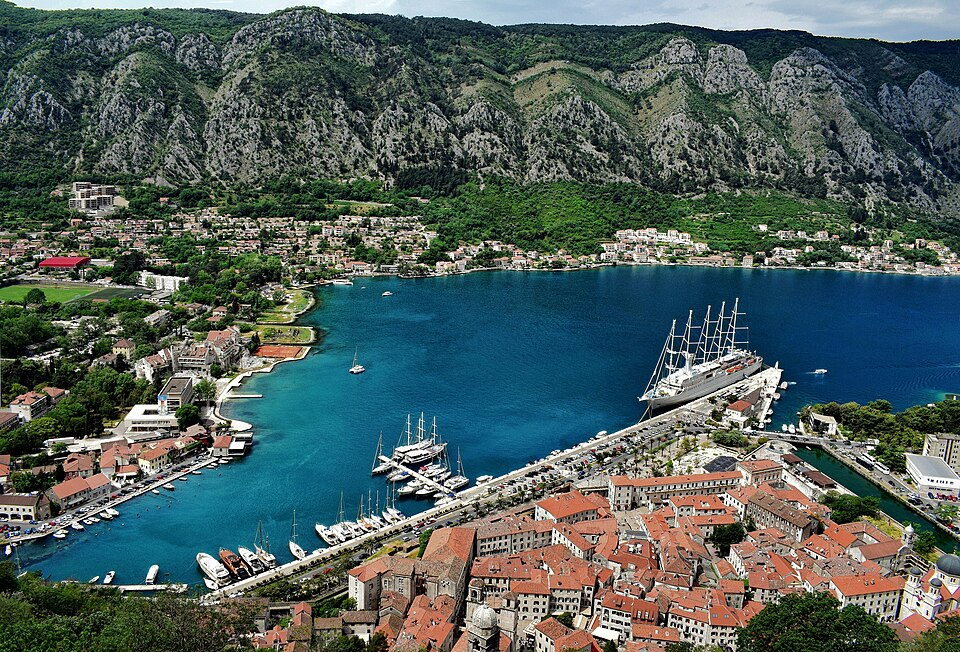
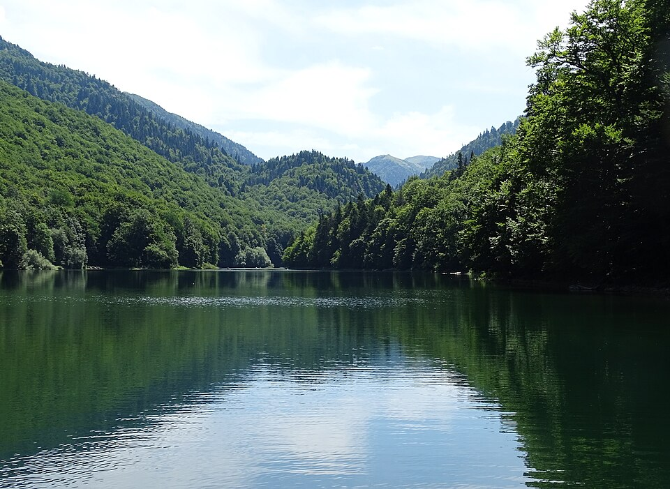
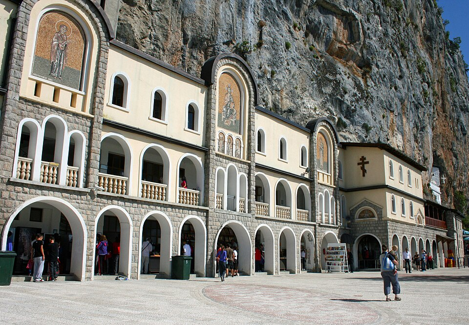
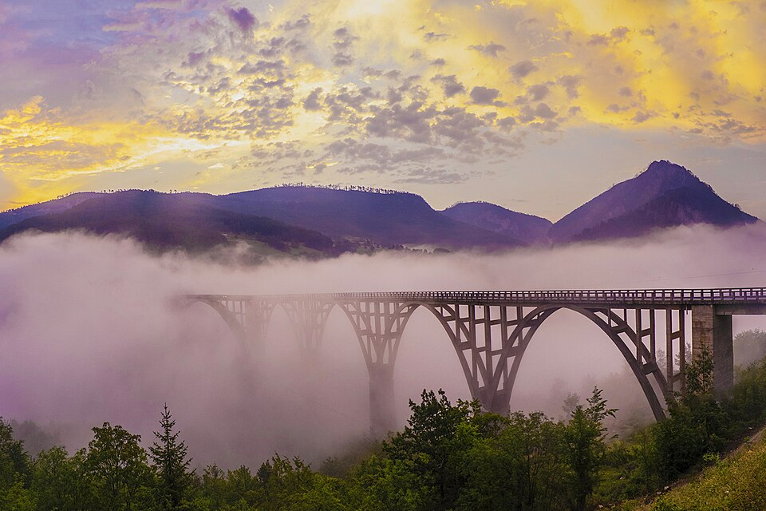

Montenegro몬테네그로 Crna Gora / Црна Гора
아드리아 해안과 고산지대가 맞닿은 작은 나라
- Capital
- 포드고리차 (Podgorica)
- Language
- 몬테네그로어
- Currency
- 유로 (EUR)

코토르 만과 구시가지Bay of Kotor
두르미토르 검은 호수Black Lake, Durmitor
절벽 속 오스트로그 수도원Ostrog Monastery
타라 협곡 주르제비차 다리Đurđevića Tara BridgeExplore Montenegro
몬테네그로 더 알아보기
아드리아해 코토르만의 베네치아 유산과 두르미토르 고산지대가 한 나라에 공존한다. 해안 휴양 관광이 경제에서 매우 중요하지만, 북부의 생태관광·바르항 물류·에너지 전환·ICT로 경제의 계절성을 줄이는 노력이 함께 진행된다. EU 가입 협상이 진전된 서발칸 국가 중 하나이며 유로화를 사용하지만 유로존 회원국은 아니라는 점이 특징이다.

Latest updates
몬테네그로 최근 뉴스
-
몬테네그로, EU 협상 장 2개 추가 종결…총 33개 중 25개
유러피언웨스턴발칸에 따르면 몬테네그로는 19일 브뤼셀 가입 회의에서 제16장(조세)과 제22장(지역정책·구조 수단 조정)을 잠정 종결했습니다. 이로써 33개 장 중 25개가 닫혔고 8개가 남았습니다.
-
EU, 불가리아·루마니아 흑해 해상안보 허브에 5,000만 유로…몬테네그로 협상 장 2개 추가 종료
BTA에 따르면 폰 데어 라이엔 집행위원장은 11월 9일 부쿠레슈티에서 니쿠쇼르 단 루마니아 대통령을 만나 흑해 해상안보 허브에 5,000만 유로를 배정한다고 밝혔고, 절차를 앞당기겠다고 했습니다.
-
몬테네그로, EU 협상 2개 챕터 추가 잠정 종결(23/33)…해외 전쟁 참전 시민 14명 집계
유럽서발칸(EWB)에 따르면 몬테네그로는 11월 6일 브뤼셀 정부간 회의에서 상품 이동 및 식품안전·수의·식물위생 챕터 2개를 잠정 종결해 33개 중 23개를 닫았고 10개가 남았습니다. 스파이치 총리는 연내 추가 회의를 기대하며 크로아티아와 양자 현안에서 타협할 준비가 돼 있다고 밝혔습니다.